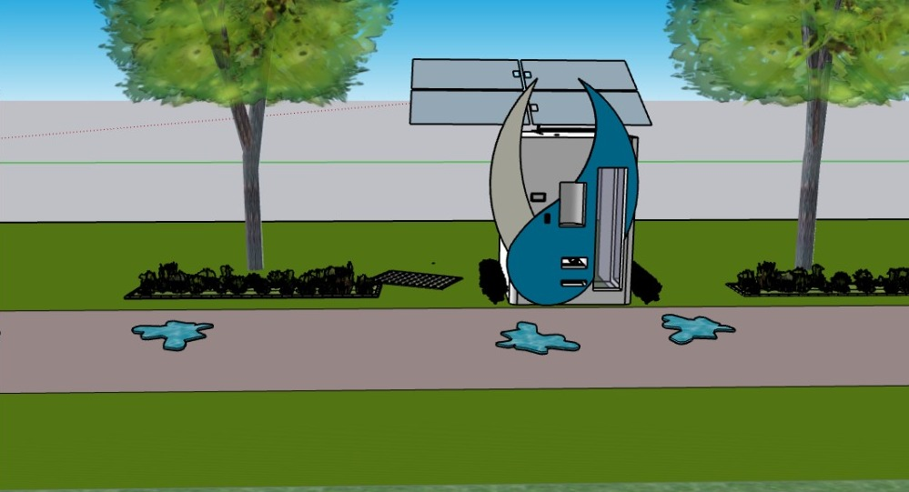

Conoce el modelo de franquicias de
ZAFELY WATER.
¿Cuánto cuesta una franquicia de ZAFELY WATER?
La inversión total necesaria para comenzar a operar una franquicia de ZAFELY WATER fluctúa entre $75,000 a $78,000 MXN. Esto incluye una cuota inicial por franquicia del 20% que debe ser pagada al franquiciador. Debido a que el costo total varía de un módulo a otro, el monto mínimo del pago inicial de entrada también varía.

Todos los franquiciados deben completar nuestro programa de capacitación antes de permitírseles comprar un restaurante. En general, la capacitación lleva de 3 a 4 semanas y se hace a medio tiempo.
Si me interesa un área en particular,
¿cómo sé que hay a la venta?
Los sitios de ZAFELY WATER, tanto nuevos como existentes, se ofrecen tanto a nuestros franquiciadores existentes como a los solicitantes de franquicias que hayan completado nuestro programa de capacitación intensivo (de 3 a 4 semanas). No franquiciamos territorios ni trabajamos con solicitantes que deseen un lugar específico o área geográfica limitada. No podemos predecir que habrá a la venta en el momento de terminar la capacitación.